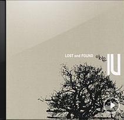

1. 미아
1. 미아

2. 하루 끝

3. 분홍신
4. 금요일에 만나요

5. 마음

6. 스물셋
7. 푸르던

8. 밤편지

9. 가을 아침
그날 알았지 이럴 줄, 이렇게 될 줄
두고두고 생각날 거란 걸
바로 알았지
까만 하늘 귀뚜라미 울음소리
힘을 주어 잡고 있던 작은 손
너는 조용히 내려 나의 가물은 곳에 고이고
나는 한참을 서서 가만히 머금은 채로 그대로
나의 여름 가장 푸르던 그 밤,
그 밤
너의 기억은 어떨까
무슨 색일까
너의 눈에 비친 내 모습도
소중했을까
머리 위로 연구름이 지나가네
그 사이로 선바람이 흐르네
너는 조용히 내려 나의 가물은 곳에 고이고
나는 한참을 서서 가만히 머금은 채로 그대로
나의 여름 가장 푸르던
빗소리가 삼킨 사랑스런 대화
조그맣게 움을 트는 마음
그림처럼 묽게 번진 여름 안에
오로지 또렷한 너
너는 조용히 내려 나의 가물은 곳에 고이고
나는 한참을 서서 가만히 머금은 채로 그대로
나의 여름 가장 푸르던 그 밤,
그 밤
그날 알았지 이럴 줄…